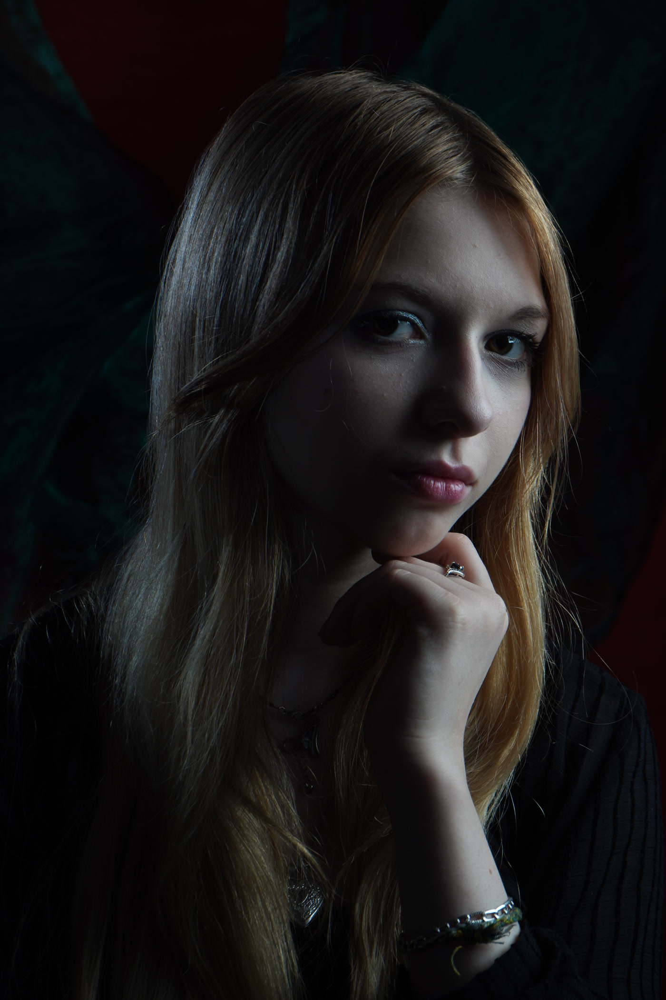
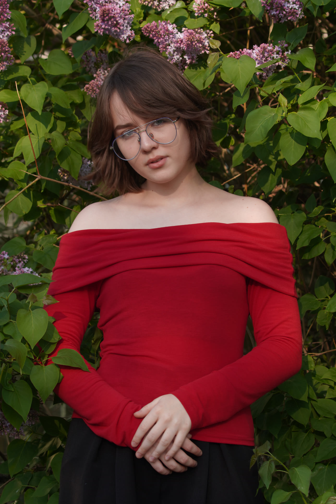
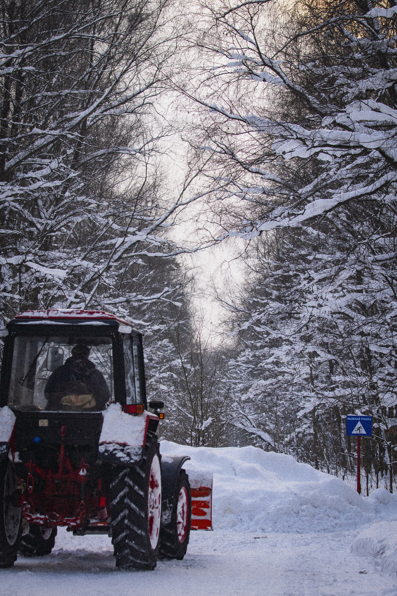
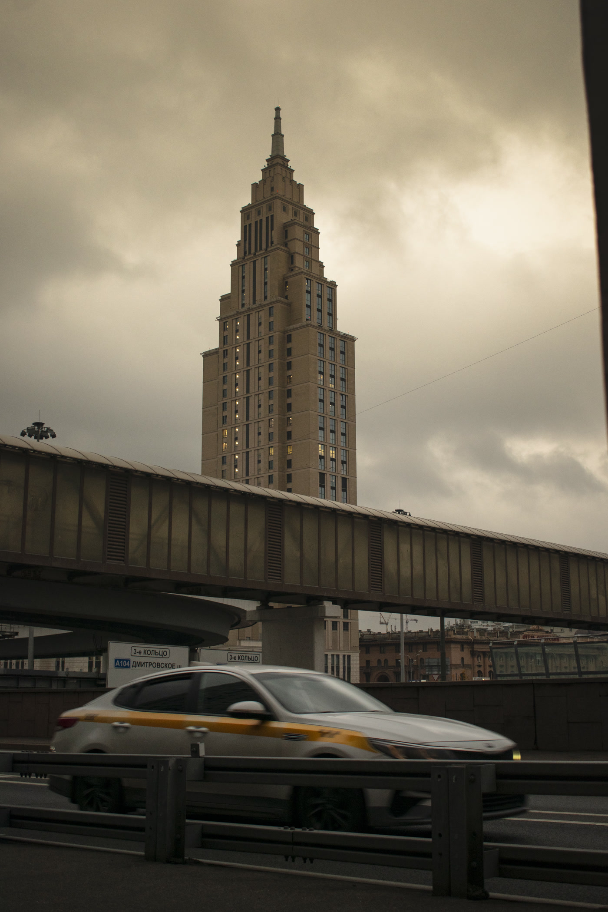
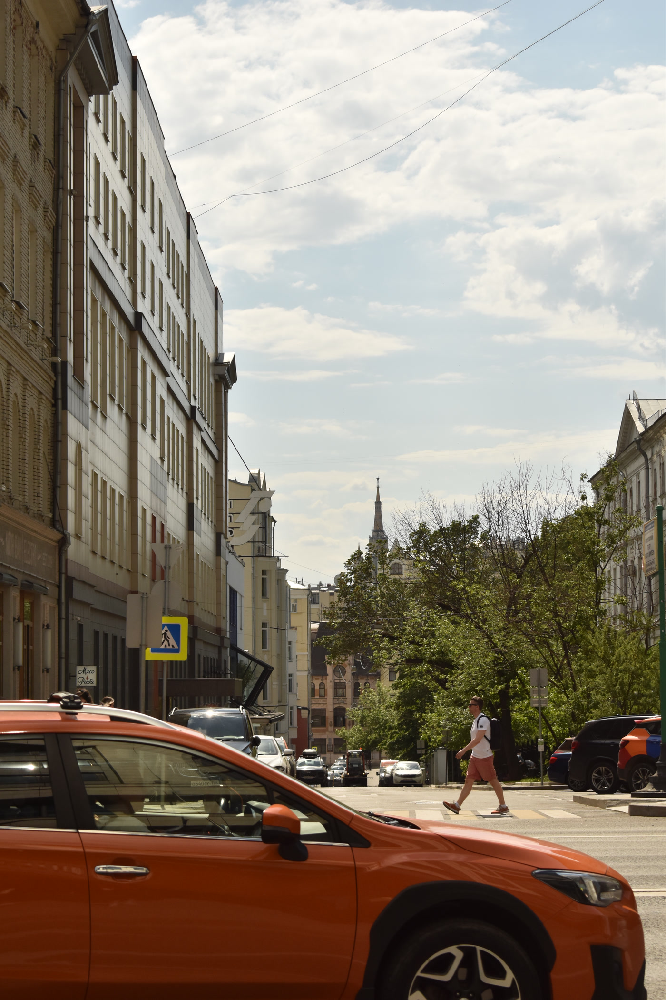

Лисса Миляева — услуги фотографа

Нестандартные решениянеобычный ракурс


Лисса Миляева — фотограф
Кто я
Ловлю настроение — в улыбке и мелочах,
чтобы фото хотелось не разглядывать, а чувствовать.

Я только начинаю свой путь в фотографии —
и влюбляюсь в каждый новый кадр.
Я создаю спокойную, тёплую атмосферу,
в которой помогаю вам раскрыться
свободно, естественно и такими, какие есть.
О чём мои кадры

Студийный портрет

Уличный портрет

Репортажное фото

Архитектура

Стрит-фотография
Мой подход и гарантии
За каждой цифрой — люди, бренды и истории, которые я сохранила в фотографиях.
Выбирайте по душе
Прозрачные цены без скрытых доплат. Точную смету соберу под вашу задачу после брифа.
Репортажное фото
события, праздники и живые моменты без постановки
от 12 000 ₽
- до 3 часов на событии
- 60 кадров в обработке
- готовые файлы за 5 дней
Любимые кадры
Выбирайте настроение и нажимайте на кадр, чтобы рассмотреть его поближе.
запись открыта
Давайте сохраним
вашу историю
Напишите, о каком кадре мечтаете,
и вместе продумаем его до мелочей.
а можно просто написать мне